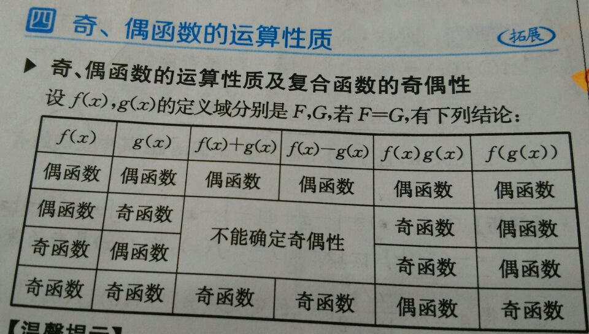
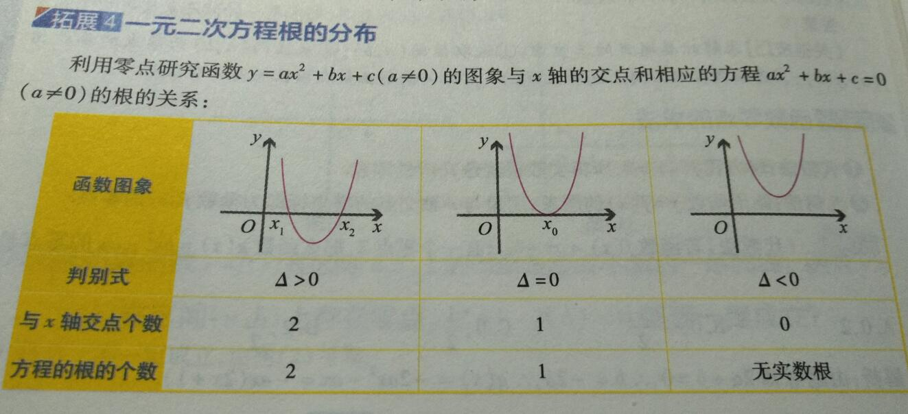
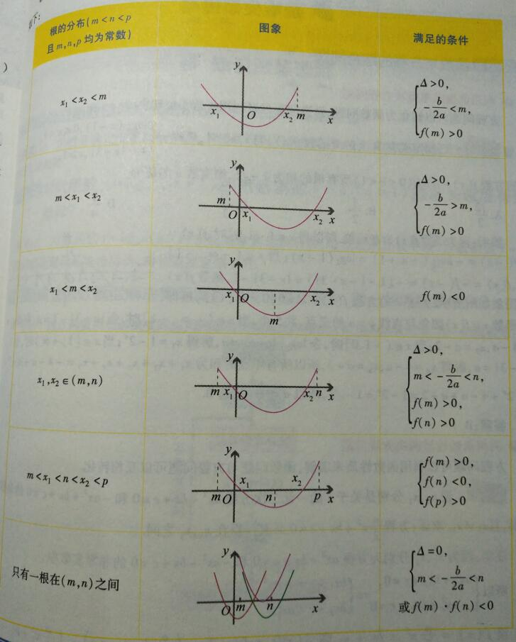
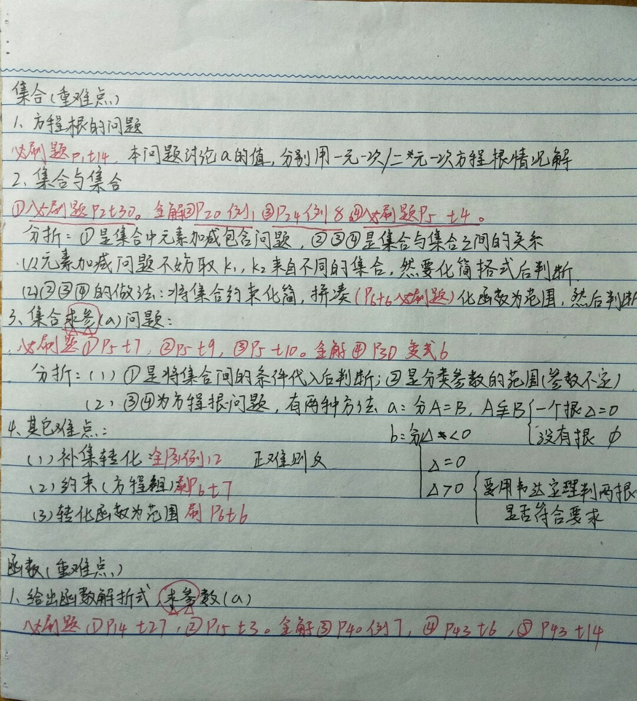
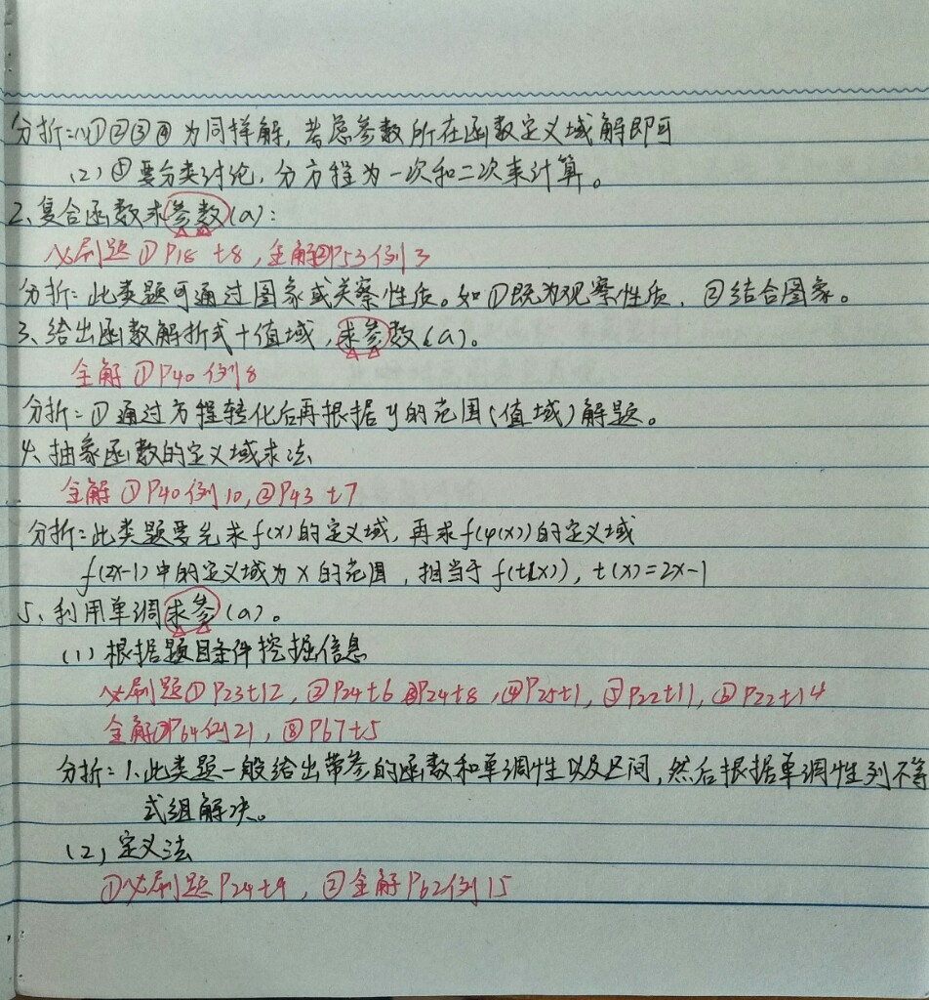
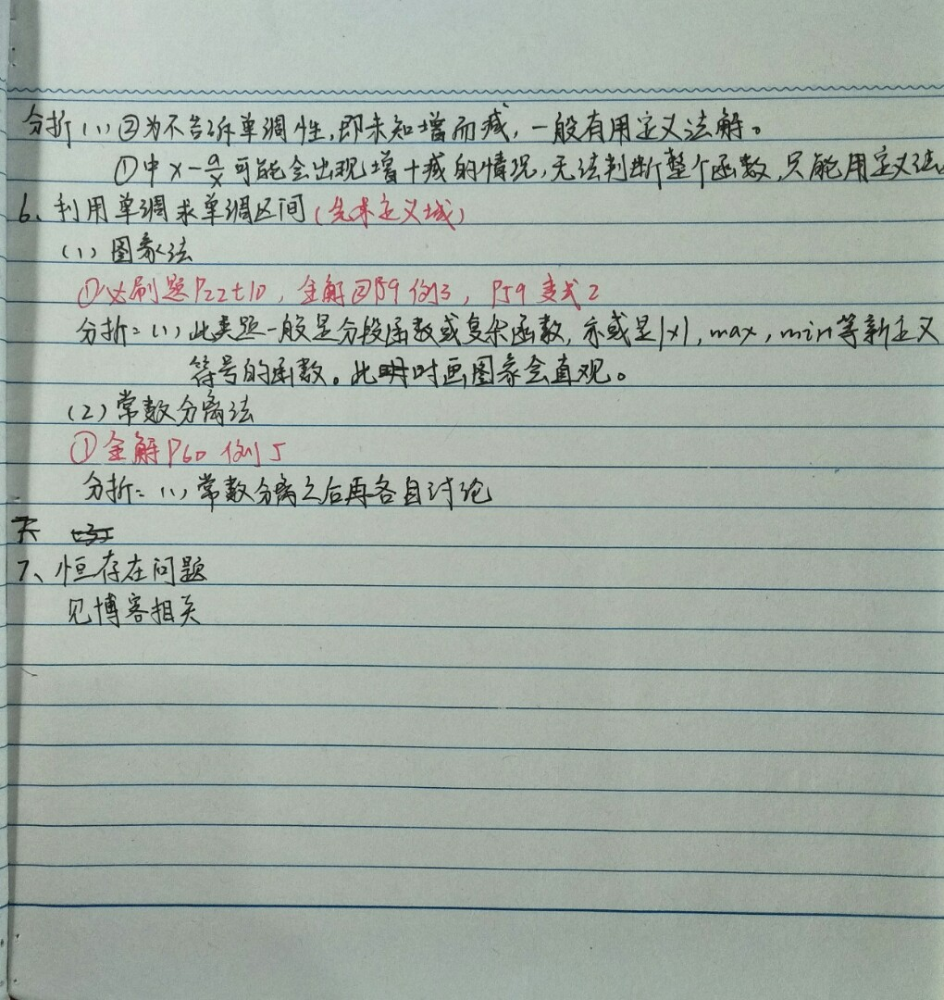

一些Trick
1、偶数表示为$2n$, 奇数表示为$2n + 1$
2、正难则反(教材全解必修1 p11 例2)
3、十字相乘解形如$px^2+ax+q=0$的方程
4、集合元素有互异性，可以判断不相等的情况(教材全解必修1 p17 t12)
5、$\in N$或者$\in Z$有分数要讨论奇偶性(教材全解必修1 p20 例5)
6、集合一般能化简就要化简做
7、方程条件转化为范围条件：$px^2+rx+q=0 →(x_1 - a)(x_2 - b) < 0$
8、对勾函数解析式：$f(x)=x+\frac ax$，极值点在$\sqrt a$
集合
分类讨论思想
对应性：教材全解必修1 p13 例8, 教材全解必修1 p17 t12
多情况：教材全解必修1 p15 考例1，教材全解必修1 p16 考例2，教材全解必修1 p16 考例3
正负性：教材全解必修1 p17 t4
方程根：教材全解必修1 p13 例9
分段：教材全解必修1 p21 变式3
集合的含义及表示
元素与集合的关系
构造题
此类题目一般要求某些元素是否是属于某个集合，一般要构造成与条件形式相同的形式。
第一问构造平方差，第二问构造与条件形式相同的形式：教材全解必修1 p11 例1，教材全解必修1 p17 t6
循环带入题
此类题目一般是将代数式循环带入后形成周期。
若$X \in M$, 则$\frac{1+a}{1-a} \in M$，求集合$M$的元素个数/证明集合中各数不同
教材全解必修1 p11 变式1
集合相等问题
有且只有一个正确
此类题目一般分情况对应以及运用相异性来解题
教材全解必修1 p16 考例2
教材全解必修1 p16 考例3
推断题
此类题目一般分情况对应以及运用相异性, 正负性等来解题
根据相异性，正负性等解题：教材全解必修1 p17 t12
方程根的问题
抓住以下导图做题
$a=0$
——–$b≠0$
——–$b=0$
—————-$c=0$
—————-$c≠0$
$a≠0$
——–$\Delta < 0$
——–$\Delta=0$
——–$\Delta > 0$
集合间的基本关系
判断集合是否包含
元素对比
仅仅根据元素对比或者条件对比
条件范围对比
运用集合条件范围来对比
判断集合是否相等
元素, 条件范围对比
仅仅根据元素对比或者条件对比
双重包含
运用$A \subseteq B，B \subseteq A$来得出$A=B$
判断集合是否真子集
B属于A且A不属于B
运用$B \subseteq A，A \nsubseteq B$来得出$B \subsetneqq A$
判断集合之间的关系
构造拼凑
将某个集合的条件凑成另一个集合的条件形式
求集合中含参问题
条件为范围
将已知范围集合画在数轴上，根据实际情况列不等式方程组(注意空集的情况)
$A \subseteq B$或$A \subsetneqq B$且$B≠\emptyset$的情况要分$A=\emptyset，A≠\emptyset$的情况讨论
统一为所求参数：教材全解必修1 p21 变式3
条件为数
分类讨论根的情况，一个/两个/没有的情况
两个根的情况要检验是否是原来的两个根
集合的基本运算
转化为集合间的基本关系
转化为集合间的基本关系运用之前的知识解题
$A \cap B = A$等价于$B \subseteq A$
$A \cup B = A$等价于$A \subseteq B$
补集转化
正难则反
数形结合
运用数轴和Venn图灵活解题
Venn图：教材全解必修1 p31 例13
容斥原理求并集元素个数
奇加偶减
设未知数：教材全解必修1 p31 例13
套容斥公式：教材全解必修1 p32 变式7
函数
函数的概念
同一函数的判定
定义域、对应关系相等的是同一函数
求函数定义域
根据定义/实际问题求解
复合函数
注意内函数必须要保证外函数
抽象函数
给出$f[g(x)]$的定义域，求$f[\varphi(x)]$的定义域
思路：先求$f(x)$的定义域，再求$f[\varphi(x)]$的定义域
教材全解必修1 p40 例10
求函数值域
图象法
能画出图象的函数可以画图求解。
例题：$y=2x+1$的值域, $y=x^2+2x-3$的值域
解析式法
1、给出二次函数，配方为顶点式求最大/最小值
分离常数法
形如$y= \frac{ax+b}{cx+d}$的函数值域一般要分离常数，即将$a,c$提取出来，然后再通过反比例函数性质求解。
形如$y= \frac{a_1x^2+b_1x+c_1}{a_2x^2+b_2x+c_2}$的函数值域解法：
1、能十字相乘就相乘，然后约去相同因子(注意如果消掉要考虑0的情况)，然后转化为$y= \frac{ax+b}{cx+d}$的形式
2、不能做就转为一元二次方程求解，分类讨论是否存在根(方程思想)：教材全解必修1 p40 例8
观察法
观察某个部分的性质求解。
例题：$y=\sqrt{x}+1$的值域
换元法
不好表示的部分要设元替换。如$\sqrt{2x-1}$
例题：$y=x+\sqrt{2x-1}$的值域
方程思想
将函数化为方程，方程要有解列不等式/方程
教材全解必修1 p40 例8
求函数参数
一般是逆向思维解题。
给出定义域
分母不为0，且方程$分母=0$无整数解
给出值域
函数的表示法
求函数解析式
替换法
例题：已知$f(x+1)=x^2$，求$f(x)$的解析式：将$x$换为$x-1$，则$f(x)=(x-1)^2$
配凑法
例题：已知$f(t)=g(x)$，求$f(x)$的解析式：将$g(x)$变形为只含$t$的式子，再将$t$换成$x$
换元法
将整体代换。
待定系数法
已知函数类型，直接设函数然后解出系数即可。
例题：已知$f(x)$为二次函数，求解析式：设$f(x)=ax^2+bx+c$
解方程组法
例题：已知$f(x)+2f(\frac1x)=x(x≠0)$，求$f(x)$：$x$与$\frac1x$互换
数形结合
画出已知函数图象解题
如果已知函数/不知函数都可以画出图象来解问题。
图象变化问题
平移：
1、左右：$f(x+a)$(左加右减)
2、上下：$f(x)+a$(上加下减)
对称：
1、$y$轴：$f(-x)$
2、$x$轴：$-f(x)$
3、原点：$-f(-x)$
翻折：
1、$|f(x)|$：整个图象都是在$N$集合的，对应负数区域对称翻折
2、$f(|x|)$：右边图象保留，左边删除，左边对称翻折右边的图象
给出图象分析问题
1、求参：带入特殊值进行推理即可
2、转化为 画出已知函数图象解题
分段函数
|x|分段讨论正负性求得分段函数
$|x-2|+|5-x|$分$x \leq 2, 2 \leq x \leq 5, x \geq 5$三种情况讨论
函数的单调性与极值(重难点)
定义法证明单调性
例题1：证明$f(x)=\sqrt{x}$在其定义域上是增函数。(定义法)
解法：
1、取$x_1<x_2$
2、$f(x_1)-f(x_2)$代数出来，化成带有$x_1-x_2$或$x_2-x_1$的式子
3、比较$f(x_1)-f(x_2)$的符号
4、定论(增函数、减函数)
(不仅可以作差，还可以作商)
技巧：因式分解、通分、配方、分子有理化
例题2：$f(x)=x+\frac ax$的单调性。(分类讨论参数法)
解法：(总体和上面的做法一致)，但是参数$a$的值不知道，就要分类讨论
从极端情况入手，可取$x_1=x_2$找到边界进行讨论
分段求单调性
根据单调函数运算性质求单调性
例题：$\frac{x^3-4x+3}{x}，x \notin N$
求单调区间(重难点)
图象法
画出图象即可判断单调区间：
高中必刷题必修1 p22 t11
教材全解必修1 p59 例3
教材全解必修1 p59 变式2
获取信息法
定义法
与 定义法证明单调性 差不多，但要先求出函数的定义域，在每个定义域上找单调区间：
高中必刷题必修1 p24 t5
常数分离法
形如$y= \frac{ax+b}{cx+d}$的函数，提取之后根据反比例函数等的性质判断
教材全解必修1 p60 例5
分类讨论
绝对值、$max、min$一般要分类进行讨论
高中必刷题必修1 p22 t11
复合函数
求一般函数极值
单调性法
证明函数在区间的单调性，根据区间端点求极值。
教材全解必修1 p60 例6
图象法
画出图象即可求函数极值。
配方法
把二次函数配方为顶点式。
换元法
把带根号的式子用一个字母表示，然后转化为配方法求极值。
求二次函数的极值
轴定，区间定
初中题。
轴动，区间定
分类讨论轴的位置
教材全解必修1 p61 例11
轴动，区间动(难点)
将区间看作不动，对称轴变化
教材全解必修1 p62 例12
单调性求参数取值范围(重难点)
定义法
未知函数的单调性，求参数取值范围：
教材全解必修1 p62 例15
高中必刷题必修1 p24 t9
高中必刷题必修1 p25 t4(定义域定义)
获取信息法
分段函数已知单调性，列不等式求参数取值范围(可能的约束都要写)：
教材全解必修1 p68 t10
教材全解必修1 p64 t21
高中必刷题必修1 p23 t12
高中必刷题必修1 p24 t6
高中必刷题必修1 p24 t8
二次函数
二次函数求对称轴位置列不等式求参数取值范围：
高中必刷题必修1 p22 t11
高中必刷题必修1 p22 t14
高中必刷题必修1 p25 t1
单调性解不等式
将不等式化为$f(x_1)<f(x_2)$的形式。
变形：教材全解必修1 p63 例16
构造：教材全解必修1 p63 例18
单调函数运算性质
基本：
$a$大于$0$时，$af(x)$与$f(x)$有相同性质，否则相反
$f(x)$与$\frac{1}{f(x)}$有相反性质
$f(x)$与$\sqrt{f(x)}$有相同性质
有公共单调区间：
增+增=增，减+减=减
增-减=增，减-增=减
复合函数的单调性
复合函数的单调性
同增异减，步骤：
1、确定函数定义域
2、分解函数
3、分别确定函数单调性
4、确定复合函数单调性
求复合函数的单调区间
1、确定函数定义域
2、分解函数
3、分别确定函数单调性
4、再求单调区间
5、确定复合函数的单调区间
抽象函数的单调性
常用方法：
1、赋值法：即特殊值法
2、配凑法：
有$f(x+y)$，则$f(x_2)-f(x_1)$配为$f((x_2-x_1)+x_1)-f(x_1)$
有$f(xy)$，则$f(x_2)-f(x_1)$配为$f(x_1 \cdot \frac{x_2}{x_1})-f(x_1)$
函数的奇偶性(重难点)
判断函数奇偶性
举反例就能证明函数不具有奇偶性。
不含参数
定义法
1、求定义域
2、定义域是否关于原点对称
3、验证$f(x)$与$f(-x)$的关系
图象法
从图中观察即可。
运算性质法
由多个奇偶函数组成的函数，一般用运算的性质来解题。

含参数
定义法
1、分$a=0,a≠0$两种情况讨论。
用定义法，代入式子求值，验证$f(x)$与$f(-x)$的关系
函数奇偶性的定义应用
求函数值
通过$f(x)=-f(-x), f(x)=f(-x)$来求函数值
教材全解必修1 p72 例3
求函数解析式
通过$f(x)=-f(-x), f(x)=f(-x)$来求函数解析式
教材全解必修1 p72 例4
求参数
通过$f(x)=-f(-x), f(x)=f(-x)$来求参数
教材全解必修1 p72 例6
函数奇偶性的单调区间
比较大小
求出单调区间然后结合单调性(图象最方便)
解不等式
用单调性来解不等式
教材全解必修1 p73 例8
教材全解必修1 p73 例9
分段函数的奇偶性
证明奇偶性
分段证明或者图象法(分段要没一段进行证明)
抽象函数的奇偶性
赋值法、定义法进行证明。
教材全解必修1 p74 例11
函数图象对称点/直线
偶函数：
$f(a+x)=f(a-x)$关于直线$x=a$对称
$f(a+x)=f(b-x)$关于直线$x=\frac{a+b}{2}$对称
奇函数：
$f(a+x)+f(a-x)=0$关于点$(a,0)$对称
$f(a+x)+f(b-x)=0$关于点$(\frac{a+b}{2},0)$对称
恒存在问题
题目的$key word$：$xx$图象总在$xx$图象上、对一切$xx$都成立、$xx$恒成立
$m$为所求参数，一定要单独放在一边！如果m的正负性不定就整体复合函数换元
$m \geq f(x)$恒成立等价于$m \geq f(x)_{max}$
$m \leq f(x)$恒成立等价于$m \leq f(x)_{min}$
例题：教材全解必修1 p84 t16，教材全解必修1 p84 t21，教材全解必修1 p84 t22
存在问题
题目的$key word$：存在一个$x$使得$xx$
$m$为所求参数，一定要单独放在一边！如果m的正负性不定就整体复合函数换元
$m \geq f(x)$存在一个$x$使得$xx$等价于$m \geq f(x)_{min}$
$m \leq f(x)$存在一个$x$使得$xx$等价于$m \leq f(x)_{max}$
指数函数
指数幂的运算
化简求值
公式
完全平方公式: $(a^{\frac12}±b^{\frac12})^2=a±2a^{\frac12}b^{\frac12}+b$
平方差公式: $a-b=(a^{\frac12}+b^{\frac12})(a^{\frac12}-b^{\frac12})$
立方差公式: $a±b=(a^{\frac13}\pm b^{\frac13})(a^{\frac23}\mp a^{\frac13}b^{\frac13}+b^{\frac23})$
技巧
1、化负为正
将指数含有减法算式的分开，比如$4^{1-x}=4 * 4^{-x}$
将指数含有负数的算式转为正数：$1-a^{-\frac13}=\frac{a^{\frac13}-1}{a^{\frac13}}$
2、加入$x^y \cdot x^{-y}=1$
比较大小
1、通分
2、化为同底数
3、化为同指数
指数函数
求定义域、值域
定义域
$y=a^{f(x)}$的定义域是$f(x)$的定义域
值域
$y=a^{f(x)}$的值域：
1、求$f(x)$的值域
2、由$y=a^u$的单调性求$y=a^{f(x)}$的值域
$y=f(a^x)$的值域：
1、求$u=a^x$的值域
2、由$y=f(b)$的单调性求$y=f(a^x)$的值域
(注意$a$的分类讨论)
指数幂大小比较
比差/商法
比差法，差小于$0$则$a$小于$b$
比商法，商小于$1$则$a$小于$b$
函数单调性法
根据单调性比较两个底数相同的指数幂
图象法
画出图象解决问题
中间值法
$x^0=1$来作为中间值，常用中间值：$0,1,2$
指数函数复合函数单调性
先求出复合函数的单调性，再求指数函数的单调性，最后进行综合。
同增异减。
解指数不等式方程
方程
方法一：将等式两边带换为同一底数
方法二：换元
方法三：分离参数法
不等式
1、将等式两边带换为同一底数
2、利用单调性求解，必要时要分类讨论$a$
对数函数
对数
计算技巧
$lgN=log_{10}N, log_eN=lnN$
$log_a1=0,log_aa=1,a^{log_aN}=N$
$lg5+lg2=1$
$lg20=1+lg2$
常用公式
基本：
1$log_cab=log_ca+log_cb$
2$log_ca/b=log_ca-log_cb$
3$log_ca^b=blog_ca$
换底：
4$log_ab=\frac{log_cb}{log_ca}$
5$log_{a^m}b^n=\frac nmlog_ab$
6$log_ab=\frac{1}{log_ba}$
7$log_ab \cdot log_bc=log_ac$
扩展：
指数式可以和对数式互换：
1、(式子)性质法
2、(方程)方程两边同时取对数
对数方程
1、基本：$log_af(x)=b$，转化为$f(x)=a^b$
2、同底数：$log_af(x)=log_a g(x)$，转化为$f(x)=g(x)$(要检验)
3、代换：$F(log_ax)=0$，用$t=log_ax$换元
对数函数
求定义域、值域
定义域
根据对数函数性质概念即可。
值域与最值
值域：根据定义域以及单调性即可。
最值：单调性，可以配合换元等
解对数不等式
比较对数值大小
1、同底：单调性
2、同真数：图象
3、otherwise：中介值
复合函数
求单调区间
1、$y=log_af(x)$的单调性：
在$a \in (0, 1)$时与函数$f(x)=u$相反，反之相同
2、$y=f(log_ax)$的单调性：
换元，使$t=log_ax$，然后讨论$t=log_ax$和$y=f(t)$的单调性
求值域、最值
换元、单调性等方法
幂函数
幂函数性质

比较大小
根据单调性等比较大小
单调性
根据单调性解最值问题
函数零点
求函数零点
求解析式的根
给出$f(x)$具体的函数解析式，求$f(x)=0$的值即可。
利用函数图象
观察函数图象即可。
求函数零点个数
利用函数零点存在性定理
略去，按照单调性和定理即可。
数形结合
给出$F(x)=f(x)-g(x)$，可以转化为$f(x)-g(x)=0$, 即$f(x)=g(x)$，然后讨论两个函数的交点个数
利用奇偶性
区间$[-a, a]$上的零点可以先研究$(0, a]$上的零点情况
利用单调性
某个函数在某个区间单调，即可利用判断零点的位置
已知函数有零点问题
将一个个值求出来用函数零点存在性定理找即可
一元二次方程根的分布


最后的总结



End